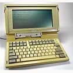
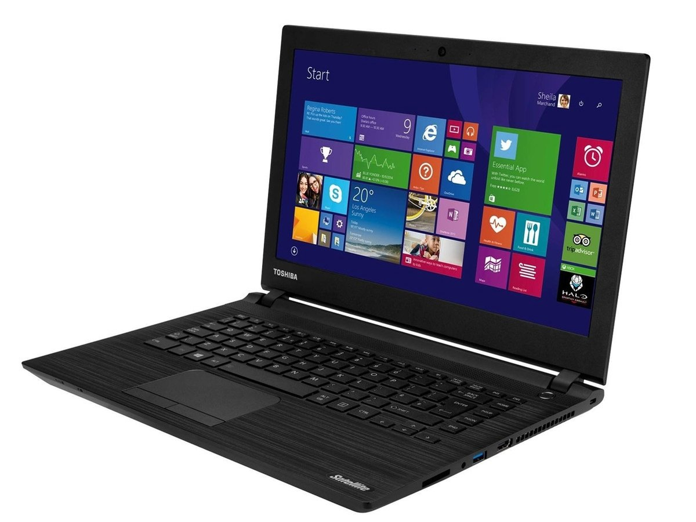

.png)
TOSHIBA
is a Japanese multinational conglomerate headquartered in Minato, Tokyo. Its diversified products and services include power, industrial and social infrastructure systems, elevators and escalators, electronic components, semiconductors, hard disk drives, printers, batteries, lighting, as well as IT solutions such as quantum cryptography.[3][4] It was one of the biggest manufacturers of personal computers, consumer electronics, home appliances, and medical equipment. As a semiconductor company and the inventor of flash memory, Toshiba had been one of the top 10 in the chip industry until its flash memory unit was spun off as Toshiba Memory, later Kioxia, in the late 2010s.[5][6][7]
The Toshiba name came to be after the merger of Tokyo Shibaura Denki K.K. (Tokyo Shibaura Electric Co., Ltd) (founded in 1939) and Shibaura Seisaku-sho (founded in 1875) and Tokyo Denki (founded in 1890). The company name was officially changed to Toshiba Corporation in 1978. It is listed on the Tokyo Stock Exchange, where it was a constituent of the Nikkei 225 and TOPIX indices (leaving both in August 2018), the Nagoya Stock Exchange, and the London Stock Exchange.
A technology company with a long history and sprawling businesses, Toshiba is a household name in Japan and has long been viewed as a symbol of the country's technological prowess. Its reputation has since been affected following an accounting scandal in 2015 and the bankruptcy of subsidiary energy company Westinghouse in 2017, after which it was forced to shed a number of underperforming businesses, essentially eradicating the company's century-long presence in consumer markets.[
 